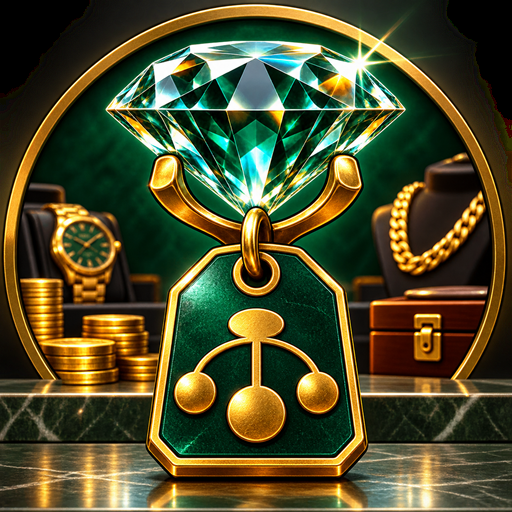
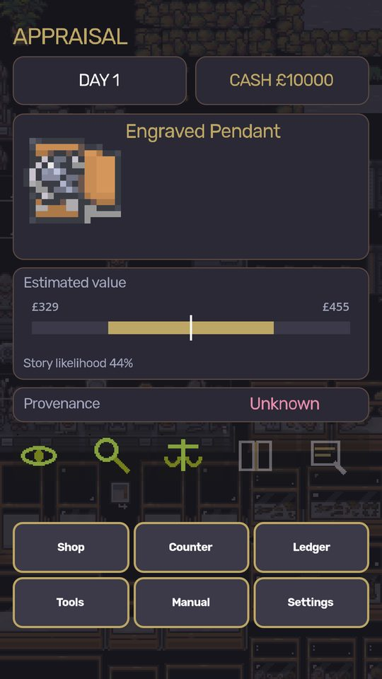
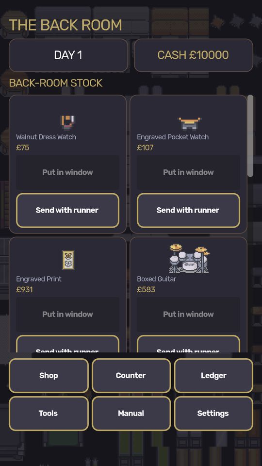
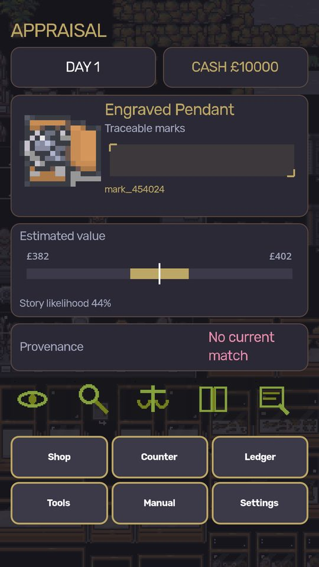
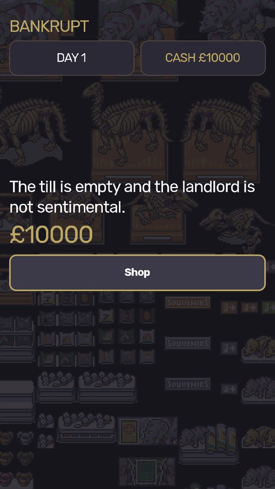

The Fence
Half your stock is stolen. The trick is knowing which half, and who is asking.
You run a pawn shop. People come to your counter with things they want to turn into money, and a story about where those things came from. Some of the stories are true. The best margins are on the items you should not have taken. A career runs four years, one day at a time, in forty to sixty minutes. Each day somebody puts an object on your counter and you get a look at it, a look at them, and a price to argue over. Buy it or pass, put it in the window or the back room, and find out on the day a police officer walks in with a property list. Appraise by eye first, then with tools you buy. Nervous is not the same as lying.
Get it on Google PlayScreenshots //





Dev log //
- Remove IAP and finalize ad-supported Android release
The 1 most recent changes worth reading, out of 4 commits.
Every line above is a real commit from this app's repository, on the date it was made. Build chores, merges and internal housekeeping are filtered out.